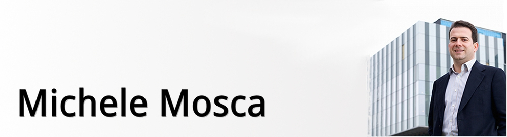
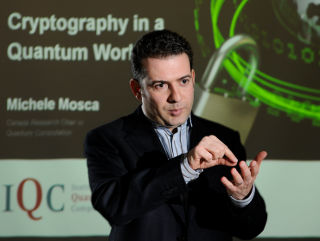

O entrevistado(){
Entrevista
Por: Fellipe Augusto Alves Gurgel

Michele Mosca é co-fundador e vice-diretor do Instituto de Computação Quântica da Universidade de Waterloo (IQC), pesquisador e membro fundador do Instituto Perimeter de Física Teórica, e professor de matemática no departamento de Combinatória e Otimização da Universidade de Waterloo. Ele ocupa o 2º nível do programa Canada Research Chair em Computação Quântica desde janeiro de 2002, e é um estudioso do Instituto Canadense de Pesquisas Avançadas desde setembro de 2003. Os principais interesses de Mosca de pesquisa dizem respeito à concepção de algoritmos quânticos.
Conheça melhor nosso convidado desta edição da printf em:
Michele:
Graduei em Matemática, com interesse particular em teoria dos números, matemática discreta e criptografia, e fiz algumas pesquisas em criptografia.
Segui o Mestrado em Matemática e as Fundações de Ciência da Computação da Universidade de Oxford, e perto do final do programa, aprendi que os computadores quânticos poderiam quebrar as suposições básicas computacionais e o esquema de criptografia de chave pública que eu estava estudando. Também desenvolvi uma apreciação mais profunda da teoria da complexidade computacional e o grande impacto que a mecânica quântica teve sobre a prática maleável de problemas computacionais.
Em outras palavras, as leis da física prescrevem as capacidades e limitações dos computadores, e assim a criptografia e a informática em geral devem ser reavaliadas no paradigma da mecânica quântica.
Então, decidi mudar meu foco de pesquisa para algoritmos em computadores quânticos para o meu doutorado em Oxford.
| Resposta Original: |
As an undergraduate, I studied mathematics, with particular interest in discrete mathematics, number theory and cryptography, and did some research terms in cryptography.
|
Michele: Fiquei interessado em criptografia, a arte de usar ferramentas matemáticas para prover segurança da informação, como a confidencialidade e autenticação. Em criptografia, a dificuldade computacional de problemas matemáticos é muito importante. Portanto, me interessei principalmente por algoritmos e complexidade.
| Resposta Original: |
I became interested in cryptography, the art of using mathematical tools to provide information security objectives, like confidentiality and authentication. In cryptography, the computational difficulty of mathematical problems is especially important. I thus became especiallyinterested in algorithms and complexity. |

Michele Mosca palestrando sobre Criptografia em um mundo
Quântico, pelo Instituto de Computação Quântica (IQC)
Michele: Minha pesquisa está focada principalmente em dois temas interligados:
- Criptografia em um mundo quântico
- Quais protocolos criptográficos serão “quântico-seguros”, isto é, forte contra tecnologias quânticas, como o computador quântico?
- Isto inclui o estudo da criptografia que pode ser implementado com a tecnologia convencional, mas é flexível a algoritmos conhecidos de computadores quânticos, e também inclui a criptografia que usa a tecnologia quântica para tirar vantagem do princípio de incerteza em vez de suposições não comprovadas sobre os problemas computacionais.
- Algoritmos quânticos e complexidade.
- Estudamos o poder computacional e as limitações dos computadores quânticos.
- Estudamos também o problema de mapear algoritmos quânticos abstratos de forma tão eficiente quanto possível, para arquiteturas de computadores quânticos práticos, lançando as bases de um futuro compilador do computador quântico.
| Resposta Original: |
My research is mostly focused on two interconnected themes:
|
Michele: Ser cofundador do Instituto de Computação Quântica, em Waterloo, Ontário, Canadá.
Este instituto foi criado através de uma parceria entre os setores públicos, privado e acadêmico no objetivo de construir o primeiro instituto global de pesquisa em informação quântica. Nós construímos uma equipe de pesquisadores brilhantes (faculdade, pós-docs, estudantes, visitantes e funcionários) trabalhando com os fundamentos, aplicações e implementações da ciência da informação quântica e tecnologia, abrangendo matemática, computação, física, química e engenharia. Juntos, somos muito maiores do que a soma das partes.
Também alavancamos a nossa massa crítica de competências de pesquisa para lançar um programa de pós-graduação em informação quântica, oferecendo tecnologia de ponta em uma ampla gama de áreas dentro de informação quântica.
| Resposta Original: |
Co-founding the Institute for Quantum Computing. |
Michele: Eu gostaria de projetar e implementar um algoritmo quântico que resolva um problema importante que melhore a vida das pessoas ao redor do mundo.
| Resposta Original: |
I would like to design and implement a quantum algorithm that solves an important problem that improves the lives of people around the world. |
}